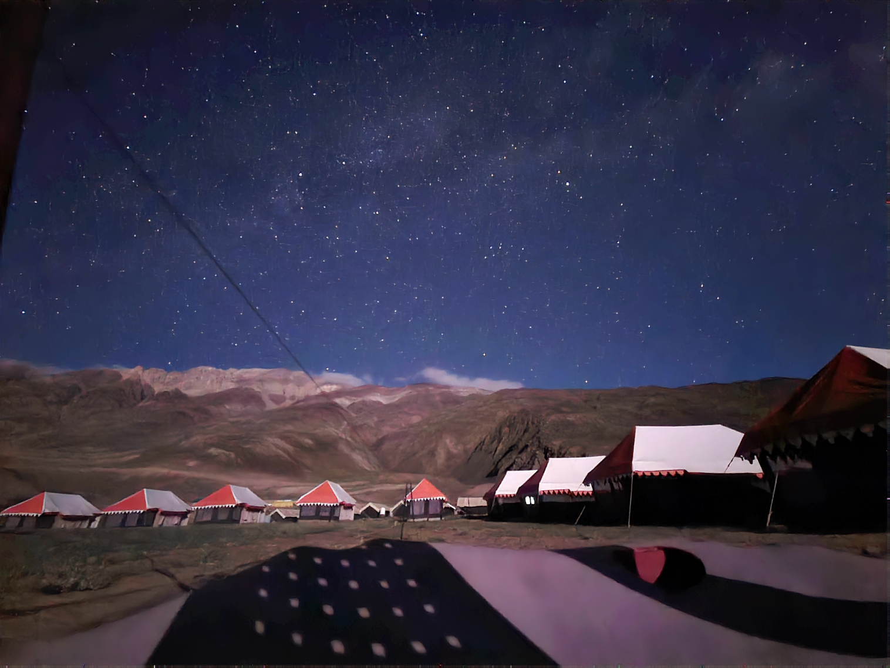

A Gênese de 'Orivana' (Inspirada por Ecos do Himalaia)
O ar fresco das montanhas, carregado com o aroma de pinho e neve distante, preenchia os pulmões do viajante enquanto seu jipe serpenteava pelas estradas sinuosas do Vale de Spiti. Um viajante, buscador de inspiração além dos limites de seu estúdio urbano, havia embarcado em uma jornada para este canto remoto de Himachal Pradesh, na Índia, nas profundezas das cordilheiras do Himalaia. O que foi descoberto não foi apenas uma paisagem de tirar o fôlego, mas uma conexão profunda com uma terra onde cada elemento parecia sussurrar sua própria história ancestral.
A Tela da Criação: As Paisagens de Spiti
Seus olhos, acostumados com o cinza urbano, foram imediatamente cativados pela beleza bruta e indomada que se desdobrava diante deles. As montanhas imponentes e antigas se erguiam como sentinelas silenciosas, com seus rostos rugosos esculpidos pela passagem dos milênios. As sutis variações de tonalidade – os ocres profundos e marrons, os dourados beijados pelo sol e os cinzas austeros das rochas expostas, todos coroados pelo branco puro dos picos cobertos de neve – foram observadas com admiração. Estas não eram apenas montanhas; eram paletas vivas, das quais brotava a inspiração para corantes naturais e tons terrosos para criações futuras.
Abaixo, o Rio Spiti, uma fita cintilante de vida, serpenteava graciosamente pelo vale. Suas margens, um mosaico de seixos e areia, revelavam texturas que despertaram ideias para tramas intricadas e superfícies táteis. Os campos verdes vibrantes cultivados, desafiando corajosamente a paisagem árida, falavam de resiliência e do valor da vida. Visualizou-se incorporar esses tons verdes naturais, talvez por meio de fibras sustentáveis ou bordados, simbolizando crescimento e vitalidade duradoura. O céu vasto e salpicado de nuvens, estendendo-se infinitamente acima, inspirava pensamentos de possibilidades ilimitadas, de designs que evocassem tanto grandeza quanto profunda tranquilidade.
Entre as maravilhas encontradas estava a impressionante Ponte de Chicham, um testemunho da engenhosidade humana suspensa sobre um desfiladeiro, conectando vilarejos remotos e oferecendo vistas vertiginosas do vale abaixo. Sua estrutura audaciosa, contrastando com o terreno acidentado, inspirou pensamentos de durabilidade e conexão. Mais adiante, a beleza etérea do Lago Chandratal foi revelada. Suas águas azuis e cristalinas, abraçadas pelas montanhas áridas, brilhavam sob o vasto céu, um oásis tranquilo que transmitia paz profunda e arte natural intocada. Esta paisagem serena tornou-se símbolo de pureza e calma, influenciando o desejo por simplicidade e elegância natural na coleção.
Sussurros da Herança: As Vilas e Mosteiros
À medida que a jornada se aprofundava, a arquitetura única das vilas e mosteiros de Spiti surgia, agarrando-se às encostas como joias antigas e preciosas. As paredes caiadas de branco, frequentemente adornadas com bandeiras de oração vibrantes e entalhes em madeira, pareciam contar histórias de tradições enraizadas e harmonia espiritual. O Mosteiro de Key, uma fortaleza de fé, erguia-se como um magnífico testemunho da perseverança e arte humanas.
Dias foram passados observando os artesãos locais, com suas mãos habilidosas trabalhando com lã e madeira, criando peças funcionais e profundamente carregadas de significado cultural. As linhas simples e elegantes das casas, os padrões geométricos nos têxteis e os toques vibrantes das vestes tradicionais foram absorvidos. Esta imersão cultural profunda solidificou sua visão: uma linha de produtos que honraria uma das ricas heranças da Índia enquanto abraçava, com elegância, a sustentabilidade moderna.
O Nascimento de 'Orivana' (Inspirada por Ecos do Himalaia)
Dessa jornada profunda, nasceu Orivana. Ela foi idealizada como uma expressão sensorial de frescor e pureza, transformando paisagens intocadas em fragrâncias vivas. Cada perfume carrega a essência do próprio Vale de Spiti
- Paleta Olfativa: Inspirada pelas montanhas, a coleção utiliza notas naturais extraídas de resinas, flores, ervas e madeiras locais, criando uma composição olfativa de acordes terrosos profundos, nuances minerais suaves, frescor aromático que remete ao céu aberto e toques verdes vibrantes da flora do vale.
- Texturas Olfativas: A rusticidade das montanhas e o fluxo sereno dos rios se traduzem em fragrâncias multifacetadas — desde notas secas e resinosas até acordes suaves, cremosos e envolventes, proporcionando uma experiência sensorial que evolui naturalmente na pele.
- Designs Aromáticos: As composições evocam padrões sutis inspirados nos motivos geométricos da arquitetura de Spiti e na simbologia das pinturas thangka, enquanto estruturas olfativas abstratas capturam a vastidão dos vales e a imponência silenciosa dos picos montanhosos.
- Sustentabilidade & Artesanato: Cada produto "Orivana" seria feito com respeito ao meio ambiente e às comunidades locais. O viajante idealizou colaborar com artesãos indianos, utilizando suas habilidades tradicionais e garantindo salários justos, criando assim um meio de vida sustentável e preservando seus antigos ofícios.
“Orivana”, inspirada por “Ecos do Himalaia”, não seriam apenas produtos; seriam histórias, cuidadosamente tecidas em tecido, ecoando a essência de um vale onde a grandeza da natureza e o espírito humano se entrelaçam. Cada peça estaria impregnada com a força tranquila das montanhas, o fluxo suave do rio e a alma vibrante de Spiti, destinada a levar um pedaço do Himalaia para casas ao redor do mundo.
